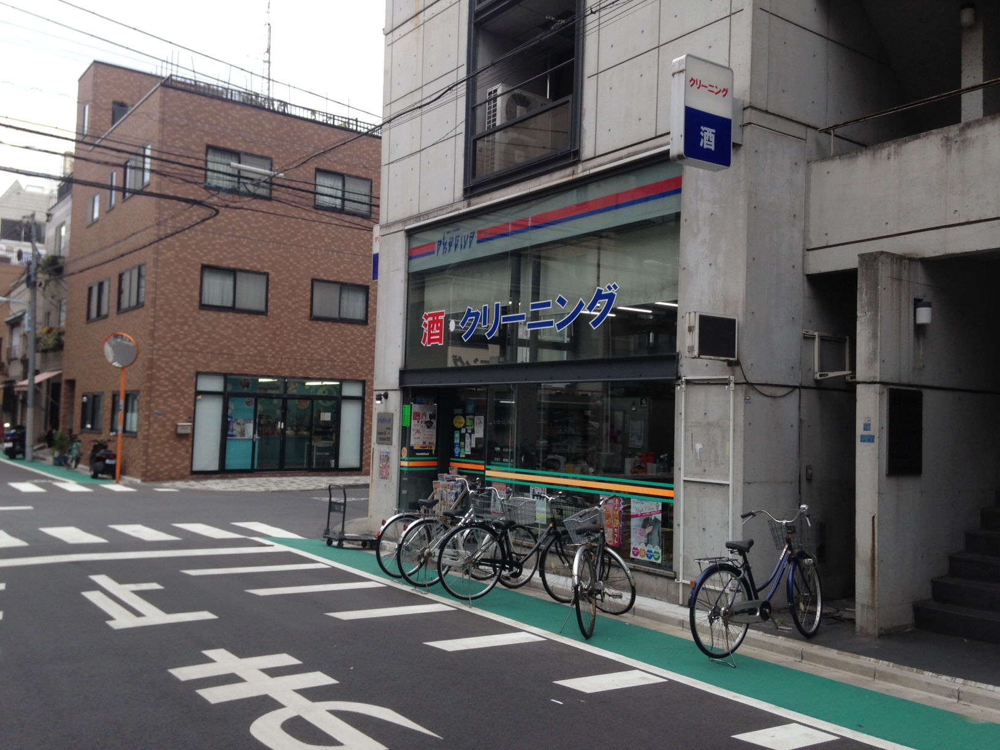
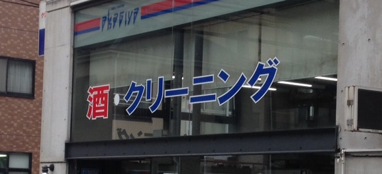

今日、浅草のあたりをウロウロしていると、こんなお店を見つけました。
最初は特に意識をしていなかったので、素通りしてしまったのですが、どこかおかしいことに気づきませんか？
そうなんです。このお店、お酒とクリーニングを同じ店で売っているのです。私の経験値が足りないだけなのでしょうか。少なくとも、私は今までこんなお店を見たことがありません。この点に気付いてから「何でだろう。。。？」という疑問が頭の中でグルグル回り始めました。
そのお店に入ったわけでもないので、正解は知る由もないのですが、皆さんならどう考えられますか？ということで、ここで問題です。
「なぜこのお店はお酒の販売とクリーニングサービスの提供を同時にしているのでしょうか？」
ここで私の考え付いた一つの仮説は、お酒の売り上げとクリーニングの売り上げに相関関係があるのでは、ということでした。マーケティング論では有名な、台風が来る前にはオムツの売れ行きとビールの売れ行きに相関関係があるという法則の一種です。（これは確かアメリカのウォルマートがデータ分析で見つけ出した法則だったような気がします。）
そしてこの「お酒の売り上げ」と「クリーニング」の売り上げに相関関係がある（つまるところ、お酒が売れればクリーニングも売れる、クリーニングが売れればお酒も売れる）というのを事実だとした場合、なぜそうなるのかを考えてみました。せっかくなので、頭の体操がてら、皆さんも是非考えてみてください。
私が導きだした結論は以下の3点なのですが、ここでも思考のダブり、抜け漏れを無くすために以前紹介した「MECE発想法」で攻めてみました。
まず、売り上げの要素をわかりやすく、次のように分類します。
売上（円）＝顧客数（人）✖️購入単価（円/人・回）✖️購入頻度（回）
そして、それぞれの要素（顧客数、購入単価、購入頻度）について以下のように考察しました。
①顧客（数）：お酒を購入する顧客層＝クリーニングサービスを使う顧客層である可能性
まず、年齢区分で考えると、お酒を購入する層は20歳以上、そしてクリーニングを出す層も多くの一般的労働者と考えれば学生以下は除かれるので、20歳以上と言えそうです。
また、生活者区分で考えると、クリーニングに出すのは一般家庭であれば主婦/主夫の方が、単身世帯はそれぞれ働き盛りの男性/女性だと思われますが、同時にお酒を購入するのも、一般家庭であれば財布を管理している主婦/主夫の方が、単身世帯ではそれぞれ自分自身で購入することになりそうです。よって、年齢区分、生活者区分両方で顧客層がダブっている可能性は高く、「お酒を購入する顧客層＝クリーニングサービスを使う顧客層である可能性は高い」という仮説は正しい気がします。
②購入単価：お酒の購入単価＝クリーニングサービスの購入単価である可能性
1,000円程度のお金しか財布の中に入っていない顧客に数万円もする商品をススめてもあまり効果は無さそうです。したがって、同じ場所に陳列している商品の単価レベルはある程度均質性があった方が同時に売れる確率も高くなるでしょう。一人暮らしの場合の一回のお酒の購入額を考えると平均的には1,000円前後、そしてクリーニング代も1,000円前後になるのではと思いますし、一般家庭の場合は少し購入単価が上がり、お酒の購入額は2,000〜3,000円程度、クリーニング代も一人暮らしよりは高くなり、2,000〜3,000円程度になるのでは、と思います。データを確認したわけではないのであくまでも想像ですが、感覚的に、「お酒の購入単価＝クリーニングサービスの購入単価である可能性は高い」という仮説は正しい気がします。
③購入頻度；お酒の購入頻度＝クリーニングサービスの購入頻度である可能性
どうでしょう、一般的に、お酒を買うのもクリーニングに出すのも週に一度か二度くらいではないでしょうか。少なくとも毎日買うとか一年に一度だけという頻度では無さそうです。もしここでさらに、「お酒を買う頻度が高ければ高いほど、クリーニングに出す傾向が強い」などという仮説も立証できるならば最高なのですが、何かそのようなことが言える要素はあるでしょうか。（あったら教えてください！）
ということで、以上つらつらと述べましたが、何かしら事業を並列させるときには、売り上げに相関関係がある事業を選ぶとシナジーが出やすいのでは、ということが言いたかったのです。今回はその要素として「顧客」、「購入単価」、「購入頻度」という三要素に注目しましたが、これが正解というわけでは全くありません。是非皆さんの切り口で考えてみてください！そして何かCOOLな切り口があれば是非共有をお願いいたします！！